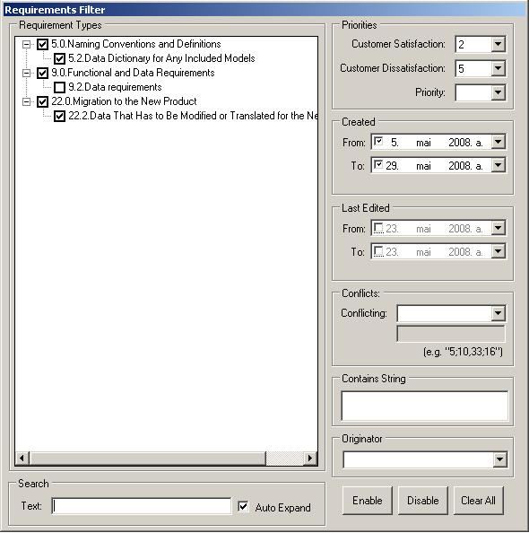

Requirements Filter
Requirements filter should be used to show minimal number of needed requirements in the
requirement manager. It allows you to work on the requirement group you need.
1. From the Requirement Manager click Filter
2. From the opened window select the conditions you need. Types tree shows you only the
requirements you have previously selected from the Types Manager.
3. Click Enable to enable this filter or Disable to just save your selections, but not filter your
requirements list.
